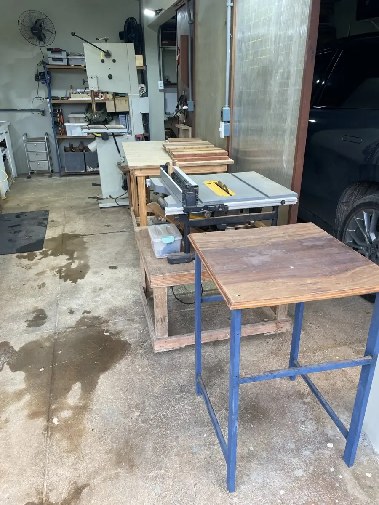

Como montar sua oficina de marcenaria: o exemplo de uma garagem de 17 m²
Uma oficina se mede em passos, não em metros. Planta, máquinas, bancada, energia, luz, pó, barulho e um checklist: a experiência de uma pequena oficina em Petrópolis, com ideias para espaços menores.

Uma oficina não se mede em metros quadrados, mas em passos: da madeira à máquina, da máquina à bancada.
Ela pode ser grande ou pequena, numa garagem ou em outro canto da casa. O importante é organizar o espaço de acordo com as máquinas, o tipo de trabalho e a circulação. Como exemplo, mostro a minha garagem e as soluções que encontrei para aproveitar cada área, depois de cinco anos de experiência numa pequena oficina na Serra Fluminense.
Este guia não é uma receita pronta. É o registro do que construí, das adaptações que fiz e do que faria diferente hoje. Minha principal sugestão é começar pela bancada e pensar desde cedo na infraestrutura das máquinas que ainda podem chegar.
Nesta versão, acrescentei ideias do primeiro capítulo de Woodworking in Small Spaces (Crowood, 2025), de Louis Kwok, um marceneiro que faz móveis dentro de um apartamento. A garagem e as soluções são minhas. Onde a ideia é dele, eu digo.
Onde coloquei cada máquina
A entrada fica na extremidade de 2,70 m, na parte de baixo do esquema. As máquinas ficam ao longo das paredes, e o centro fica livre para circular.
- Desempenadeira. Perto da entrada, do lado esquerdo. Mede cerca de 1,40 × 0,50 m e exige 35 cm livres para o deslocamento da barra da régua.
- Bancada. 1,64 × 0,66 m, com armários embaixo e morsa à esquerda. É o centro dos trabalhos manuais.
- Compressor. No chão, entre a bancada e o móvel da furadeira. Não instalei rede fixa de ar comprimido.
- Furadeira e armário. Bancada com furadeira vertical e armários embaixo, onde guardo o desengrosso.
- Armário do fundo. Aberto, de metal e madeira, com quatro prateleiras para materiais e acessórios.
- Ventilador. Na parede do fundo, à esquerda do armário. Movimenta o ar, mas não substitui a captação de pó.
- Mesa de saída. Com pés vazados, perto da entrada, para apoiar peças e facilitar a limpeza.
- Serra de bancada. Sobre um carrinho na mesma altura da bancada, para apoiar peças longas.
- Mesa auxiliar. Sobre rodízios, para colagem e outras tarefas, com prateleira embaixo para sobras de madeira.
- Serra de fita. A aquisição mais recente, do lado direito, perto do fundo.
Desenho esquemático: não representa as folgas de operação nem a escala exata.
Desengrosso: guardado no fundo, usado perto da entrada
O desengrosso é uma das máquinas que mais produzem cavacos e serragem. Como não o uso com tanta frequência, prefiro mantê-lo protegido, guardado no armário embaixo da furadeira vertical. Na hora de trabalhar, levo a máquina para perto da entrada da garagem, onde é mais fácil recolher e retirar os resíduos.
Costumo apoiá-lo sobre a serra de bancada, que já fica perto da porta. Atenção: uma lona comum não garante estabilidade. O apoio precisa ser firme, nivelado, aguentar o peso e a vibração da máquina e permitir fixá-la como manda o manual. A serra de bancada deve ficar desligada da tomada, sem possibilidade de ser acionada por acidente, enquanto servir de apoio.
Também aproveito duas mesas auxiliares que já tinha: uma para apoiar a madeira antes de entrar no desengrosso e outra, menor, na saída. Não é obrigatório ter as duas; no meu caso, elas facilitam o manuseio de peças compridas. Ajuste a altura dos apoios, mantenha o caminho livre e nunca substitua a condução segura prevista pelo fabricante.


É uma solução para uma garagem pequena, não uma recomendação universal. Se não der para garantir uma base estável sobre a serra de bancada, prefira um carrinho ou um suporte próprio para o desengrosso. Mesmo perto da porta, a coleta de pó na saída da máquina continua importante.
Máquinas altas no fundo: serra de fita e furadeira vertical
A furadeira vertical e a serra de fita ficaram mais para o fundo. Nos trabalhos que costumo fazer, as duas produzem relativamente pouca serragem, comparadas à serra de bancada, à desempenadeira e ao desengrosso.
Há também uma vantagem de organização: as duas são altas e ocupam muito volume visual. Encostadas nas paredes do fundo, deixam a área central livre para circular e movimentar tábuas.
A bancada foi a primeira decisão
Construí a bancada com 1,64 m de comprimento, 66 cm de profundidade e cerca de 85 cm de altura, com armários fechados embaixo e uma morsa metálica à esquerda. Fiz também o carrinho da serra de bancada para que a superfície ficasse na mesma altura da bancada, o que permite apoiar peças mais compridas.

A ordem em que a oficina cresceu
- Bancada: o primeiro móvel que construí e a referência de altura para os outros apoios.
- Serra de bancada: instalada num carrinho na mesma altura da bancada.
- Desengrosso: facilitou o preparo da madeira; fica guardado e vai para perto da entrada na hora do uso.
- Desempenadeira: completou o preparo da madeira bruta e pediu um espaço lateral próprio.
- Furadeira vertical: ganhou uma bancada com gavetas e armazenamento embaixo.
- Serra de fita: a mais recente, acomodada perto do fundo.
Energia, luz, água e pó
Elétrica
Distribuí tomadas pelas paredes, com eletrodutos aparentes, que facilitam mudanças futuras. A iluminação tem circuito separado. Algumas máquinas podem pedir alimentação trifásica, mas isso depende do equipamento e da rede disponível; não é obrigatório para começar. Um eletricista habilitado deve dimensionar tensão, circuitos, proteções e aterramento.
Kwok lembra um cuidado que parece óbvio, mas pega muita gente: ele se mudou de um país de 220 V para outro de 110 V e teve de usar transformadores. No Brasil a tensão muda de cidade para cidade, entre 127 V e 220 V. Antes de comprar uma máquina, principalmente pela internet, confira a etiqueta. Carregadores e aparelhos bivolt (100–240 V) funcionam em qualquer lugar. Ele também recomenda ter tomadas perto de onde se trabalha, para carregar baterias e ligar luminárias sem sobrecarregar uma só tomada, e manter o chão livre de cabos, que num espaço pequeno viram tropeço. Por isso sugere pensar em ferramentas a bateria de uma mesma linha, que dividem as baterias entre si.
Iluminação
Uso luz geral difusa e comprida no teto, complementada por luz pontual onde faz falta: bancada, furadeira, serra de fita, mesa auxiliar e serra de bancada. Na bancada, a luz de cima deve iluminar a área de trabalho sem ficar bloqueada pelo corpo.
Kwok acrescenta a temperatura de cor. A luz do dia fica por volta de 5.000 a 6.500 K, e trabalhar com algo parecido ajuda a enxergar cores e tons de verdade, o que conta muito na hora de tingir, envernizar ou combinar madeiras. Ele mesmo prefere uma luz um pouco mais quente, que cansa menos os olhos, e admite que é uma escolha pessoal. O conselho dele é começar com o que já se tem, de preferência com lâmpadas LED de rosca comum (E27), e só depois investir num sistema próprio. Hoje ele usa fitas de LED com brilho e temperatura reguláveis. Para os cantos difíceis, usa pequenas luminárias USB de haste flexível ligadas a baterias portáteis antigas.
Água e esgoto
Uma área úmida ajuda na afiação de formões e plainas e na limpeza de pincéis. Na minha oficina ela fica na outra vaga da garagem; em outro projeto, poderia ficar numa região afastada das máquinas e das tomadas. Resíduos de tintas, vernizes e solventes precisam de descarte adequado, nunca direto no esgoto.
Pó e ventilação
Coloquei a desempenadeira e a serra de bancada perto da entrada e um ventilador no fundo. Para reduzir a exposição ao pó fino, priorize a captação junto às máquinas, a filtragem e a proteção respiratória; um ventilador sozinho não resolve.
Kwok faz uma distinção útil. Serrar e aplainar à mão gera lascas e serragem grossas, que caem no chão e se varrem. O perigo maior está no pó fino, que não se vê, e nos vapores de acabamentos. Por isso ele separa as máscaras: algumas filtram só partículas, outras filtram também gases e vapores, e o ideal é um modelo com filtros substituíveis. Recomenda ainda óculos, protetor auricular e um calçado fechado e antiderrapante, que protege de ferramentas e peças que caem. Um hábito simples que ele sugere: no fim do dia, observar onde o pó assentou. Isso mostra como o ar circula na oficina e com que frequência é preciso limpar.
Ele conta que testou um coletor de pó de 1 HP em casa e desistiu: barulhento demais e desnecessário para quem nunca liga duas máquinas ao mesmo tempo. Fica com um aspirador. Numa garagem com desengrosso e desempenadeira, porém, a coleta na saída da máquina continua importante. Cada oficina tem a sua medida.
Armazenamento
Além dos armários sob a bancada, vale prever um armário grande, com portas, para proteger as ferramentas elétricas portáteis da poeira; o espaço embaixo da bancada da furadeira é uma boa opção. Armários altos nas paredes ao lado da furadeira também funcionam (acima dela não há altura). Se escolher armários suspensos, deixe um ponto de energia para a luz embaixo deles. Para as ferramentas de uso frequente, um painel na parede continua útil, e a madeira pode ficar em suportes de parede, desde que a estrutura aguente o peso.
Kwok insiste num ponto que costuma ficar para depois: reservar desde o início um lugar para a madeira. Quem planeja só a área de trabalho logo vê o espaço tomado por tábuas trazidas da madeireira ou recolhidas aqui e ali. O truque dele é olhar para cima e para baixo: peças longas e folhas de lâmina deitadas sobre armários e estantes, móveis antigos adaptados, paredes com painel perfurado ou french cleat (sarrafos chanfrados onde se penduram suportes). Esses sistemas são modulares e crescem junto com a oficina. Ele sugere também ter duas superfícies de trabalho, uma para trabalhar e outra para apoiar ferramentas e peças, para que nada vá parar no chão.
Pintura e acabamento
Não defini um ponto fixo para pintura. Cada oficina precisa considerar o tipo de produto, a ventilação, a proteção contra poeira e a distância das fontes de ignição. Produtos inflamáveis ou pintura por pulverização exigem cuidados específicos.
Barulho e vibração
Numa garagem isso costuma pesar menos. Em apartamento ou casa geminada, é das primeiras coisas a pensar, e Kwok dedica boa parte do capítulo a isso. A primeira decisão dele foi escolher o cômodo sem parede compartilhada com vizinhos. Para saber o que é barulho demais, ele mediu com um aplicativo de decibelímetro no celular: o ambiente da casa dele fica perto de 40 dB, e um aspirador ou um liquidificador chega a 70–80 dB. A tupia de mão e a furadeira ficam na mesma faixa. A conclusão dele: usos curtos são aceitáveis, e isso até ajuda a planejar melhor a sequência do trabalho.
- Caixa para o aspirador. Uma caixa simples de compensado forrada com espuma grossa reduziu o ruído do aspirador em 10 a 15 dB. É preciso deixar uma abertura para o ar e não usar por muito tempo seguido, para não superaquecer o motor.
- Tapetes de borracha. Martelar e bater formão também transmite vibração pelo piso. Os tapetes finos de ginástica ajudaram pouco. O que funcionou foram os tapetes grossos de academia, em placas de 50 × 50 cm, colocados primeiro só sob a bancada e os cavaletes. Ainda protegem a ferramenta que cai.
- Cuidado com o piso. Num dos apartamentos, ele cobriu o cômodo inteiro com borracha de 4 mm e compensado de 18 mm. Funcionou, mas a borracha manchou o piso de granilite. Num imóvel alugado, ponha uma manta de proteção antes.
Um passeio pelo espaço



E se o seu espaço for menor que uma garagem?
Muita gente começa sem garagem nenhuma, e o livro de Kwok é justamente sobre isso. Ele começou com uma área de cerca de 2 × 1 m na varanda do apartamento, usando como bancada uma ilha de cozinha comprada usada. Depois passou para um quarto inteiro e hoje trabalha entre a sala e os quartos. Do capítulo, tirei estas ideias:
- Comece onde der para guardar e limpar. Há quem use a mesa da cozinha e devolva tudo ao lugar no fim do dia. Para ele, o essencial é conseguir arrumar e varrer depois de cada sessão. Oficina bagunçada desanima.
- Meça o caminho até a oficina. Elevador, escada e portas definem a tábua mais comprida que você consegue levar para dentro. Ele usa um carrinho de mão herdado de uma loja que fechou.
- Espaço maior também cobra. Mais área convida a comprar mais máquinas e a acumular mais madeira. Crescer aos poucos o ensinou a comprar com mais critério e a inventar com o que já tinha.
- Adapte o projeto ao espaço. Uma serra de mesa grande não passa pela porta de um apartamento, mas uma serra circular de mergulho corta compensado. Móveis desmontáveis, modulares ou inspirados nos móveis de campanha do século XIX cabem onde uma mesa de jantar inteira não caberia.
- Compre bem, uma vez. Ferramenta barata falha cedo. Melhor um conjunto pequeno e decente do que um de cada.
- Comece pelo básico e sem pressa. Os vídeos e as redes sociais aceleram e simplificam tudo. Juntas simples e acabamentos como a cera de abelha são uma boa base, e a pressa é o caminho mais curto para um acidente ou para um trabalho malfeito.
Checklist para planejar a sua oficina
Espaço
- Medir o local e desenhar a planta.
- Reservar passagem e área de operação de cada máquina.
- Planejar onde ficam a madeira e as ferramentas.
- Prever um armário fechado para as ferramentas elétricas portáteis.
- Medir portas, escada ou elevador: qual a tábua mais longa que entra?
- Reservar um lugar só para a madeira, olhando para cima e para baixo.
Infraestrutura
- Avaliar a parte elétrica com um profissional.
- Planejar luz geral e luz pontual.
- Prever água e esgoto.
- Deixar energia para a luz sob armários aéreos.
- Conferir a tensão da rede (127 V ou 220 V) antes de comprar máquinas.
- Escolher a temperatura de cor da luz.
Trabalho seguro
- Definir a altura da bancada.
- Planejar o controle do pó.
- Avaliar onde fazer o acabamento.
- Ter máscara para pó e para vapores, óculos e protetor auricular.
- Pensar nos vizinhos: barulho, horários e vibração.